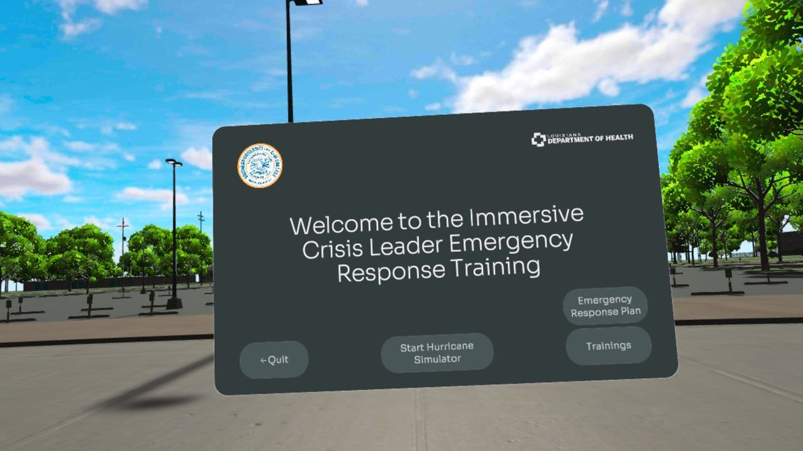

ICLERT: rehearsing a crisis before it happens.
Crisis-leadership training in VR, built on a university emergency response plan and funded by the Louisiana Department of Health.

Crisis drills don’t feel like a crisis.
Emergency leaders usually rehearse incident command in tabletop exercises and slide decks. Those rarely recreate the pressure of a real activation, so the first hard call often comes during the real event.
The Louisiana Department of Health funded ICLERT through its COVID-19 public-health workforce grant. The brief was immersive training for at least 30 campus crisis managers, plus training modules that the Department could reuse elsewhere.
What shaped the design.
- Every scenario had to follow the university’s Emergency Response Plan: incident command (ICS) and emergency operations centre (EOC) activation.
- Trainees were often new to VR, so it had to run on Meta Quest 3 headsets and in a CAVE, with a navigation tutorial first.
- A grant timeline, a 14-student team and an outside vendor building the simulator. The quarterly report names the short timeline and a CAVE computer failure as the main challenges.
What I did.
I co-led the project as its technical lead. I set the direction for the VR system and led a 14-student team across research, software and QA.
I managed the VR subcontractor: the scope of work, a review of the vendor agreement, and written feedback specifications on each simulator build. I also wrote the training curriculum, the six hurricane scenarios with their performance scoring, and the pre/post trainee survey, and co-authored the progress reports to the Department of Health.
The simulator and learning platform were built by the subcontractor to our specifications.
Four calls that shaped it.
- 1Ground every scenario in the real plan
Scenarios follow the university’s Emergency Response Plan, so leaders practise the procedures they would actually use. [Why this mattered — to confirm]
- 2Branching decisions with scoring, not a guided tour
Leaders choose at each decision point and are scored against the scenario’s objectives, instead of watching a scripted walkthrough.
- 3Foundations in class first, then the headset
A two-day format: in-class foundational courses, then the hurricane course in VR, then group and individual assessment. [Why — to confirm]
- 4Write the vendor a spec for every build
Each simulator build got written feedback. The June 2025 change specification covered the dashboards and 11 in-scene interactions.
The artifacts.
- 10 courses: 3 foundational in-class courses and 7 hurricane courses on VR headsets, delivered as course files and a headset app.
- A campus VR simulator: a 3D model of the campus built from LiDAR and satellite imagery, with the shelter and the EOC in high detail, in clear and hurricane weather (built by the subcontractor).
- A briefing dashboard with topic modules, and a navigation tutorial for first-time VR users.
- A new EOC layout and organisation chart, and contributions to updating the university’s continuity-of-operations plan.
- A new-course proposal prepared for the university curriculum committee.
What we can show so far.
These are delivery results, not learning results. The pre/post survey is built, but there are no trainee results yet, so I make no claim that decisions improved.
Honest limits.
- No measured change in trainee decisions yet. The first step is running the pre/post survey that is already built.
- Next: a decision-quality measure inside the headset, and a comparison with tabletop training.
- This work leads into a 2026 proposal on protocol-grounded LLM decision support, tested with people in these simulations.
I can lead a team and a vendor from an institutional protocol to training people actually use, and I know what evidence is still missing before calling it effective.